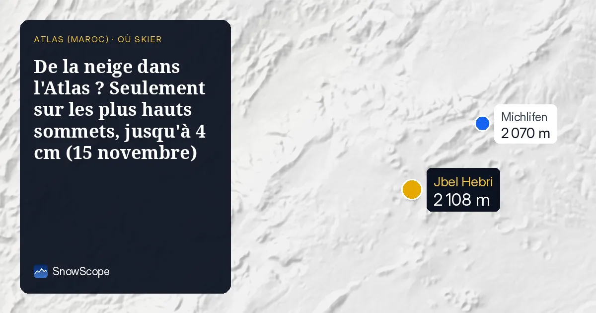

De la neige dans l'Atlas ? Seulement sur les plus hauts sommets, jusqu'à 4 cm (15 novembre)
Y a-t-il de la neige dans l'Atlas aujourd'hui ? Il n'y a pas de neige sur les pistes de l'Atlas aujourd'hui. La neige n'est stockée que sur les plus hauts sommets : environ 20 km² de sol, jusqu'à 4 cm d'épaisseur. Chaque chiffre ici est une estimation avec une part d'incertitude ; la tendance sur plusieurs jours est en général plus fiable qu'une valeur.
Consultez les prévisions neige en temps réel pour Jbel Hebri sur l'application SnowScopeHauteurs de neige, alertes poudreuse et carte 3D, gratuitement.
Normal, en avance ou en retard ?
Est-ce inhabituel ? Sur les 46 derniers hivers, la hauteur de neige habituelle à cette date à 2 028 m près de Jbel Hebri était de 0 cm : la réserve de neige de l'Atlas se remplit en général plus tard, un départ sans neige est donc normal.
| Station | Hauteur de neige | Neige fraîche, 72 h | Attendu, jours suivants | Sommet |
|---|---|---|---|---|
| Jbel Hebri | 0 cm | 0 cm | 0 cm | 2 108 m |
| Michlifen | 0 cm | 0 cm | 0 cm | 2 070 m |
| Oukaïmeden | 0 cm | 0 cm | 0 cm | 3 258 m |

Combien de neige au sol
Jbel Hebri : les pentes ne gardent pas de neige. Michlifen : pas de neige stockée sur les pentes. Oukaïmeden : les pentes ne gardent pas de neige.
La surface enneigée est passée de 30 km² le 13 novembre à 20 km² aujourd'hui, et notre prévision donne 20 km² le 18 novembre : c'est la surface qui stocke de l'eau sous forme de neige.
La neige encore à venir
D'ici le 18 novembre, la prévision n'ajoute pas de neige notable dans les stations, donc la réserve de neige ne grossira pas.
Dans l'Atlas, l'altitude décide qui reçoit la neige : Oukaïmeden monte à 3 258 m, bien au-dessus de Jbel Hebri (2 108 m) et Michlifen (2 070 m), qui ont besoin de perturbations plus froides pour blanchir.
Les prévisions à quelques jours peuvent changer : regardez à nouveau la carte la veille du départ.
Où la neige tient, où elle fond
Le 18 novembre, l'isotherme 0 °C à Jbel Hebri monte entre 4 870 m et 4 950 m, au-dessus du sommet de la station (2 108 m) : les précipitations peuvent tomber en pluie ou en neige mouillée, et la pluie sur la neige accélère la fonte.
Conseils aux skieurs
- De la neige sur la carte ne veut pas dire que la station est ouverte : vérifiez remontées et dates d'ouverture sur son site.
- La neige de début de saison est fine. Restez sur les pistes ouvertes et damées : cailloux et herbe se cachent juste dessous.
- Les prévisions à quelques jours peuvent changer : regardez à nouveau la carte la veille du départ.
- Activez une alerte poudreuse dans l'app SnowScope pour savoir quand Jbel Hebri reçoit de la neige fraîche.
À propos de ces chiffres
Les hauteurs de neige des stations sont la neige la plus épaisse sur le haut du domaine, d'après le modèle de neige SnowScope (environ 1 km, calcul du 15 novembre) ; ce sont des estimations pour une zone, pas une mesure en un point. Les valeurs des stations de mesure sont mesurées à la date indiquée. Les prévisions peuvent changer. Consultez toujours le bulletin d'avalanche officiel avant le hors-piste.
Citer ce bulletin
Pour la recherche, l'enseignement ou la presse : chiffres et graphiques réutilisables librement sous CC BY 4.0 avec cette citation.
SnowScope (2026), De la neige dans l'Atlas ? Seulement sur les plus hauts sommets, jusqu'à 4 cm (15 novembre), https://snowscope.app/blog/fr/2026/11/atlas-morocco-atlas-snow-check-15-november-2026.html, consulté le 2026-11-15
SnowScope (Atlas Labs). (2026, November 15). De la neige dans l'Atlas ? Seulement sur les plus hauts sommets, jusqu'à 4 cm (15 novembre). SnowScope snow reports. https://snowscope.app/blog/fr/2026/11/atlas-morocco-atlas-snow-check-15-november-2026.html
BibTeX
@misc{snowscope2026atlasmoroccoatlassnowche,
author = {{SnowScope (Atlas Labs)}},
title = {De la neige dans l'Atlas ? Seulement sur les plus hauts sommets, jusqu'à 4 cm (15 novembre)},
year = {2026},
month = nov,
howpublished = {\url{https://snowscope.app/blog/fr/2026/11/atlas-morocco-atlas-snow-check-15-november-2026.html}},
note = {Published 2026-11-15 20:24 UTC; accessed 2026-11-15}
}· CC BY 4.0 · Méthodes, données et outils →
Jbel Hebri : neige et température selon l'altitude, cet hiver vs l'hiver dernier (outils) →
Suivre Jbel Hebri
Gratuit : un message quand la neige arrive, et la météo chaque matin.
Autres bulletins neige

Environ 65 mm sur le Toubkal d'ici le 12 novembre, mais l'isotherme 0 °C reste vers 4 000 m : pluie à Oukaïmeden et dans les vallées, neige au sommet seulement.

Courmayeur en tête du pronostic avec 88 cm en 72 heures ; l'épaisseur de neige atteint 142 % de la normale pour mi-novembre selon les données du 15 novembre.

Pluie prévue alors que le niveau de congélation monte à 4 080 m ; la neige mesurée le 15 novembre est fine (moins de 20 cm) dans toutes les grandes stations des Pyrénées.